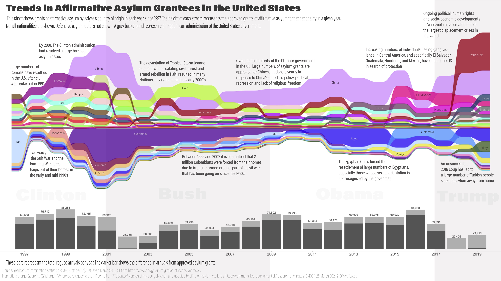

🎶Omigod! Omigod you guys Looks like Dizz has gone and won the prize If there ever was a perfect plot then this one qualifies Omigod you guys!🎶
Look at this!! 😭 https://new.library.arizona.edu/news/winners-2021-data-visualization-challenge-announced
And this OMG! 😭😭😭
First place win in @uazlibraries Data Visualization Challenge illustrating the influx of immigrants seeking asylum over time.
— University of Arizona Research Data Repository (@UAZ_ReDATA) May 13, 2021
You can get the data here: https://t.co/TI99ay0fgL https://t.co/pv6iUCN0ZC